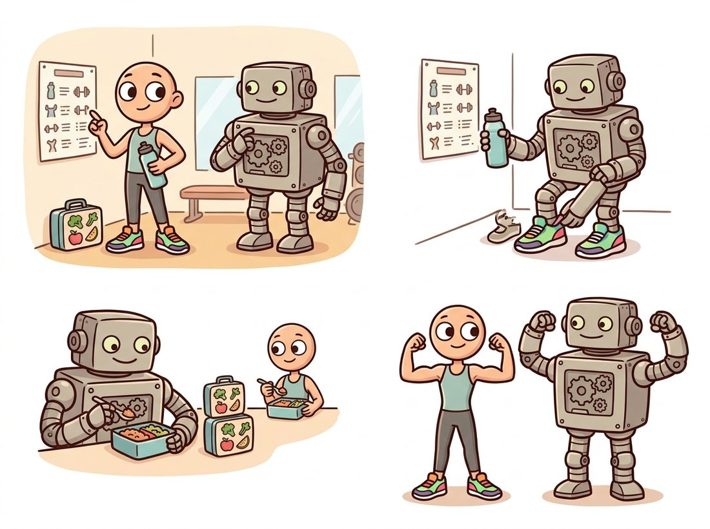

"They said attention had replaced me. So I borrowed its haircut, its diet, and its workout routine, kept my own bones, and showed up to the same benchmark looking exactly as good. Turns out it was never about the attention."
A Convolutional Network That Read the Transformer's Diary
When vision transformers appeared to dethrone the CNN around 2020, ConvNeXt asked the sharp scientific question: was it the attention mechanism, or was it the modern training recipe and macro design that came with it?, and by modernizing a plain ResNet one change at a time, it matched the transformer with zero attention. This closes the chapter's loop. The bottleneck ConvNeXt removed was not architectural but methodological: the CNN had simply stopped getting the newest recipe. Each step (a patchify stem, large depthwise kernels, fewer norms and activations, GELU and LayerNorm) is a controlled experiment, and the cumulative result proves that much of the transformer's reported edge was the recipe riding along, not the mechanism.
Section 20.4 ended the efficiency branch of the story. This section returns to the accuracy frontier, where, in 2020 and 2021, the vision transformer (the subject of Chapter 22) and its hierarchical cousin the Swin transformer began topping ImageNet, and a narrative formed that convolution was obsolete. ConvNeXt, from Liu and colleagues at Facebook AI Research in 2022, is the rebuttal, and it is included here not as the "newest CNN" but as a model of how to think about architecture: change one thing, measure, keep what helps, and never confuse a bundled improvement with its cause.
1. The Transformer Scare Intermediate
A vision transformer cuts an image into patches, embeds each patch as a token, and processes the tokens with self-attention (Chapter 22). With enough data and the right recipe it matched or beat the best CNNs, and because attention is a genuinely different mixing operation than convolution, the community reasonably attributed the gains to attention.
But transformers also arrived with a package of other changes: longer training schedules, stronger augmentation, the AdamW optimizer, LayerNorm instead of BatchNorm, GELU instead of ReLU, and a coarse "patchify" first layer. (GELU, the Gaussian Error Linear Unit, is a smooth alternative to the ReLU of Section 20.1: instead of the hard cutoff $\max(0, x)$, it scales each input by the probability that a standard Gaussian falls below it, so the curve bends gently through zero rather than kinking.) The confound was that no one had isolated which factor mattered. ConvNeXt's contribution is the isolation experiment.
2. Modernizing a ResNet, One Change at a Time Advanced
ConvNeXt starts from a standard ResNet-50 and applies the transformer-era changes incrementally, measuring ImageNet accuracy after each, in the spirit of a careful ablation. The changes fall into a few groups, sketched in Figure 20.5.1: a modern recipe (more epochs, better augmentation, AdamW), a macro redesign (patchify stem, adjusted stage compute ratios), the ResNeXt trick of grouped or depthwise convolutions (ResNeXt is a ResNet variant that replaces each bottleneck's dense $3 \times 3$ with grouped convolution, the grouping idea of Section 20.4), an inverted bottleneck like MobileNetV2's, a large $7 \times 7$ depthwise kernel, and micro changes (GELU for ReLU, LayerNorm for BatchNorm, fewer activations and norms per block).
The single most striking number in the figure is the first jump: simply training the unchanged ResNet-50 with the modern recipe lifts accuracy by nearly three points (from about 76.1% to 78.8%), before any architectural change at all. The rest of the climb comes from macro and micro design, none of it attention. The destination, around 82% top-1 for the tiny variant, matches the Swin transformer it was chasing. The conclusion is precise: a pure convolutional network, given the same recipe and comparable macro design, is competitive with the transformer, so the mechanism was not the deciding factor.
# A ConvNeXt block keeps the ResNet residual and the depthwise convolution but
# borrows the transformer's habits: a large 7x7 kernel, LayerNorm, GELU, an
# inverted bottleneck, and only one activation and one norm per block.
import torch
import torch.nn as nn
class ConvNeXtBlock(nn.Module):
"""A ConvNeXt block: 7x7 depthwise -> LayerNorm -> 1x1 expand -> GELU -> 1x1."""
def __init__(self, dim, expand=4, layer_scale=1e-6):
super().__init__()
self.dwconv = nn.Conv2d(dim, dim, 7, padding=3, groups=dim) # large depthwise
self.norm = nn.LayerNorm(dim, eps=1e-6) # channels-last LN
self.pw1 = nn.Linear(dim, expand * dim) # 1x1 as Linear
self.act = nn.GELU() # GELU, not ReLU
self.pw2 = nn.Linear(expand * dim, dim)
# learnable per-channel scale on the residual branch, stabilizes training
self.gamma = nn.Parameter(layer_scale * torch.ones(dim))
def forward(self, x): # x: (B, C, H, W)
skip = x
x = self.dwconv(x)
x = x.permute(0, 2, 3, 1) # to (B, H, W, C) for LayerNorm/Linear
x = self.pw2(self.act(self.pw1(self.norm(x))))
x = self.gamma * x
x = x.permute(0, 3, 1, 2) # back to (B, C, H, W)
return skip + x # the same residual addition as ResNet
blk = ConvNeXtBlock(96)
print(blk(torch.randn(1, 96, 56, 56)).shape)skip + x residual addition of Section 20.3, the groups=dim depthwise convolution of Section 20.4) and borrows from transformers the nn.GELU, nn.LayerNorm, the expand inverted bottleneck, and the learnable self.gamma layer-scale, with only one activation and one norm per block.Three design choices in that block are worth naming. The depthwise kernel is a large $7 \times 7$, echoing the large-kernel revival of RepLKNet and giving each block a wide receptive field in one step, the opposite of VGG's many-small-kernels philosophy from Section 20.2. The block uses only one activation and one normalization, far fewer than a ResNet block, matching the transformer's sparse use of nonlinearities. And the normalization is LayerNorm, computed over channels per spatial location, rather than BatchNorm; this removes the batch-size dependence that BatchNorm (from Chapter 19) imposes and matches transformer practice.
The reusable lesson of ConvNeXt is methodological, not architectural. When a new method arrives bundled with new training tricks, new optimizers, and new normalization, you cannot attribute its gains to the headline mechanism until you have held everything else fixed and changed one thing at a time. ConvNeXt did exactly that and found the headline mechanism (attention) was not the cause. This is the same controlled-experiment discipline you should apply whenever you read "our new block improves accuracy by X": ask what else changed at the same time.
ConvNeXt is the architecture that won an argument by quietly copying its opponent's homework, line by line, until the answers matched. It kept exactly one thing the transformer did not have, the convolution, and borrowed everything else: the optimizer, the schedule, the augmentation, the normalization, even the coarse patchify first layer. When the scores tied, the only variable left unexplained was the one ConvNeXt refused to give up. That is not stubbornness; that is a controlled experiment with a sense of humor. The illustration below draws the idea: the classic convolutional network copying its rival's diet and workout while keeping its own body.

3. What ConvNeXt Tells You About Architecture Intermediate
ConvNeXt reframes a decade of this chapter. The architectures from LeNet to ResNet were genuine mechanism changes that each removed a real bottleneck. But by the 2020s the marginal architecture mattered less than the recipe and the data, a point Chapter 21 develops in full. Convolution and attention turn out to be two reasonable choices of mixing operation, and for many tasks the choice is less important than how you train. This does not make architecture irrelevant; it means architecture and recipe are entangled, and the honest comparison holds the recipe fixed. ConvNeXt V2 later pushed the design further by co-designing it with masked-autoencoder self-supervised pretraining, the subject of Chapter 25, showing the CNN can also benefit from the pretraining strategies that powered foundation models.
Who: an applied research team at a retail-analytics company evaluating backbones for shelf-product recognition, 2024. Situation: a recent internal report claimed a vision transformer beat their ResNet-50 baseline by three points and recommended switching. Problem: the transformer had been trained for 300 epochs with heavy augmentation, while the ResNet baseline used a five-year-old 90-epoch recipe. Decision: citing the ConvNeXt result, the team re-ran the ResNet-50 with the same modern recipe and the same epoch budget before committing to a migration. Result: the gap shrank from three points to under one, and the ResNet, being faster to serve on their existing hardware, stayed in production. Lesson: a benchmark comparison is only meaningful when the recipe is held fixed. ConvNeXt is not just an architecture; it is a permanent reminder to audit what else changed before you attribute a win to the new thing, the exact root-cause discipline this chapter has pressed since AlexNet.
ConvNeXt ships in both torchvision and timm with strong pretrained weights, so the block above is for understanding, not for typing in production:
# Load ConvNeXt pretrained, re-headed for 10 classes, in one timm call. The V2
# variant pairs the same architecture with the masked-autoencoder pretraining of
# Chapter 25, so the block above is for understanding, not for production typing.
import timm
# ConvNeXt-Tiny, ImageNet-pretrained, matched to a Swin-Tiny in accuracy:
model = timm.create_model("convnext_tiny", pretrained=True, num_classes=10)
# ConvNeXt V2 with the masked-autoencoder pretraining of Chapter 25:
model_v2 = timm.create_model("convnextv2_tiny", pretrained=True)The library assembles the patchify stem, the four stages of large-kernel depthwise blocks, the LayerNorm and GELU plumbing, the layer-scale parameters, and the stochastic-depth regularization that the modern recipe needs, hundreds of lines, behind one factory call. Swapping convnext_tiny for resnet50 or efficientnet_b0 lets you A/B competing backbones in a single edited string, the workflow of Section 20.6.
timm.create_model call each instead of the hand-built ConvNeXtBlock above. The library assembles the patchify stem, the four stages, the layer-scale parameters, and the stochastic-depth regularization internally; the num_classes=10 argument re-heads the model, letting you A/B backbones by editing one string.The years since ConvNeXt have blurred the convolution-versus-attention line rather than declaring a winner. ConvNeXt V2 (CVPR 2023, arXiv:2301.00808) added a global response normalization and self-supervised pretraining; hybrid models like FastViT (ICCV 2023) and the 2024 to 2026 wave of efficient backbones freely mix depthwise convolutions for local detail with attention for global context, choosing each per stage by measured latency. Meanwhile, large-kernel pure CNNs (RepLKNet and successors) and state-space models such as the Vision Mamba family (2024) offer yet other mixing operations at sub-quadratic cost. The settled view in 2026 is the one ConvNeXt argued: the mixing operation is a tunable choice, not a verdict, and the strongest models pick the cheapest operator that meets the accuracy target on the target hardware. You will be equipped to read that literature after the attention machinery of Chapter 22.
Using Figure 20.5.1, list the ConvNeXt modernization steps in order and assign each its approximate accuracy contribution. (a) Which single step contributes the most, and is it architectural or methodological? (b) Sum the architectural-only contributions and the recipe contribution separately. (c) Write two sentences explaining what this decomposition implies about the claim "attention replaced convolution", and connect it to the "do not confuse the bundle with its cause" insight.
Build two small networks for CIFAR-10 from the ConvNeXtBlock above, one using nn.LayerNorm (as written) and one swapped to nn.BatchNorm2d. Train each at batch sizes 256, 32, and 4, holding everything else fixed, and record final test accuracy in a $2 \times 3$ table. Show that the BatchNorm variant degrades sharply at batch size 4 while the LayerNorm variant is stable, and explain the result using the batch-statistics dependence of BatchNorm from Chapter 19.
Pick a small image-classification dataset (Oxford Flowers, Food-101, or a subset of ImageNet). Fine-tune resnet50, convnext_tiny, and a vision transformer (vit_small_patch16_224) from timm using the identical recipe (same epochs, augmentation, optimizer, learning-rate schedule). Report top-1 accuracy, parameters, and inference latency for all three. Discuss whether, on your task and with the recipe held fixed, any architecture has a decisive edge, and relate your conclusion to ConvNeXt's central claim.